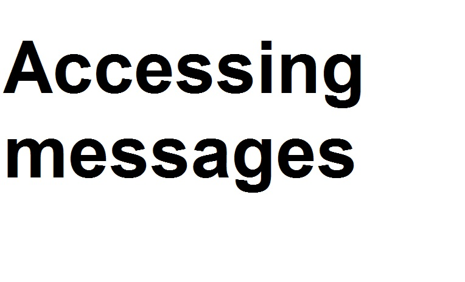
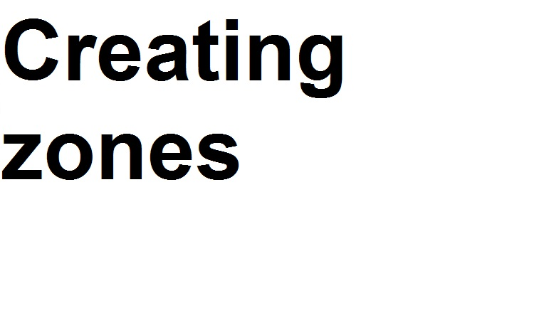
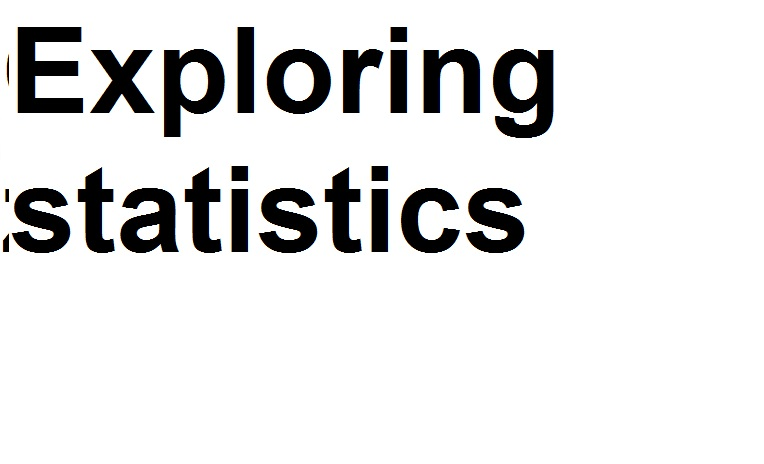

First you have to choose a zone that is shown within the map. After choosing one the messages that were shared within the zone are displayed in the message window on the right. They are ordered from the newest to the oldest message.
For creating a zone you have to use the "..." button. After you have activated it you can create a region directly on the map and set its properties afterwards. It is mandatory to set a duration time for the zone.
The website offers statistics the show the activity in each zone. For exploring the statistics you have to choose a zone in the map and click the "..." button.
